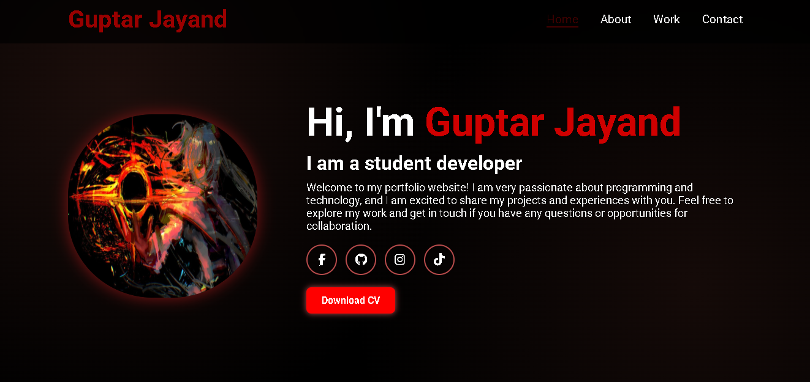
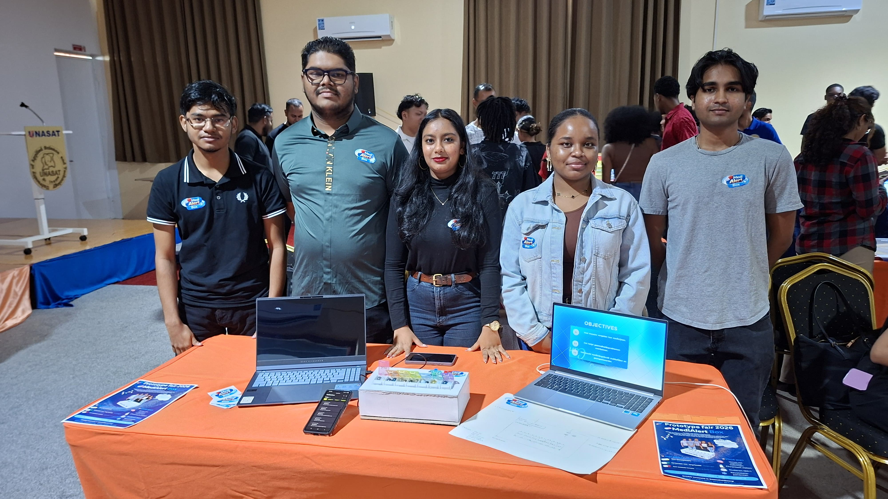
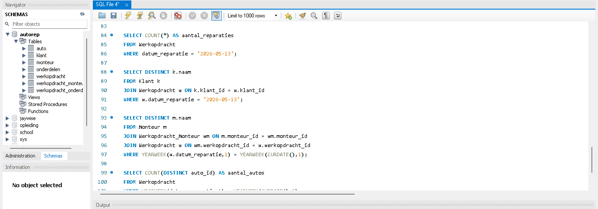

Portfolio
Selected Projects

Smart Medical Box
Collaborated in a development team to program and assemble a smart medicine dispenser. Utilized microcontrollers and sensor hardware arrays to track dosage schedules and alert patients.

Database Systems Architecture
Designed complete, scalable relational database structures inside MySQL Workbench. Focused heavily on data normalization (1NF to 3NF), establishing complex foreign key constraints, and tuning query execution.